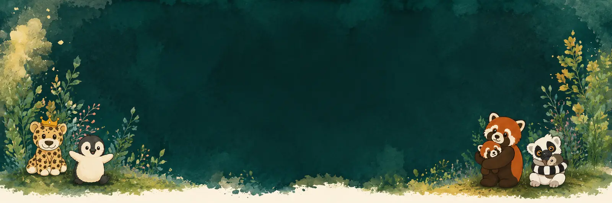
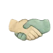

Einzel- und Familienbegleitung
Systemische Begleitung und Gespräche, Stärkung von Beziehung und Bindung, Lösungen entwickeln, die im Alltag tragen.

Angebot
Verstehen. Verbinden. Verändern.
Jede Familie, jedes Kind und jede Situation ist einzigartig. Jede Begleitung beginnt mit einem Erstgespräch – kostenfrei, unverbindlich und für eine einzige Frage: Passt das hier für euch?

Meine Angebote im Überblick
Systemische Begleitung und Gespräche, Stärkung von Beziehung und Bindung, Lösungen entwickeln, die im Alltag tragen.

Sicherheit im eigenen Handeln gewinnen: Grenzen und Verbindung zusammendenken, Entlastung finden, Selbstfürsorge stärken.

Die Funktion des Verhaltens erkennen, Eskalationen unterbrechen, Reparatur üben – und alltagstaugliche Schritte entwickeln.

Reizverarbeitung, Anforderungsdruck und Masking einordnen, Alltag und Umfeld anpassen, bei Diagnostik und Nachgesprächen begleiten.

Rollenfindung, Bindung, Vereinbarkeit – und ein ehrlicher Austausch ohne Bewertung.

Fallberatung, kollegiale Beratung, Teamtage und Prozessbegleitung für Kitas, Schulen und Helfersysteme.

Impulsvorträge, Inhouse-Seminare und Elternabende zu Ko-Regulation, Umgang mit Wut, Übergängen und PDA im Alltag.
Wie Begleitung aussehen kann

Im NetzwerkImmer mit demselben Ziel: mehr Verständnis, mehr Verbindung und Schritte, die im echten Alltag halten. Preise nenne ich im Erstgespräch, weil Umfang und Format sich stark unterscheiden. Wenn Geld ein Hindernis ist, sag es bitte – dafür finden wir meistens eine Lösung.

Das finden wir im Erstgespräch heraus – kostenfrei und unverbindlich.